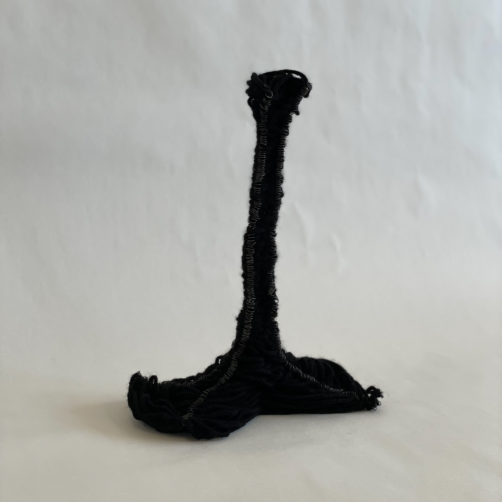
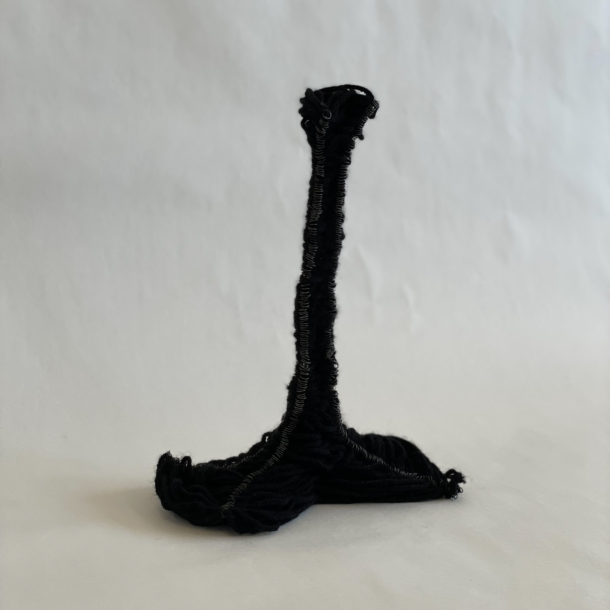
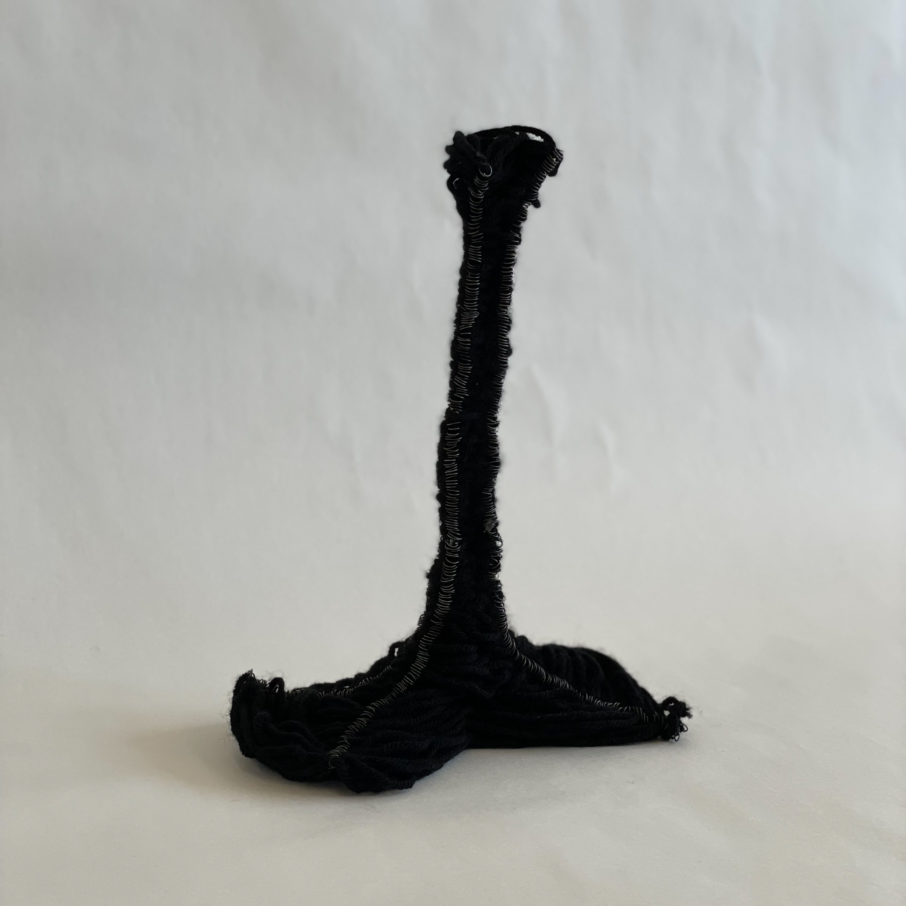

A study about the physical properties of materials and combining architectural theory. Goal was to make 1:1 constructions of artifacts through handmade techniques such as assembling, casting, carving, suspending, and layering. The work is additionally informed by organizational principles such as grided, clustered, centralized, stacked, or wrapped. Challenged the possibilities and limitations of each chosen material to create structure.
Instructor: Silvia Acosta
